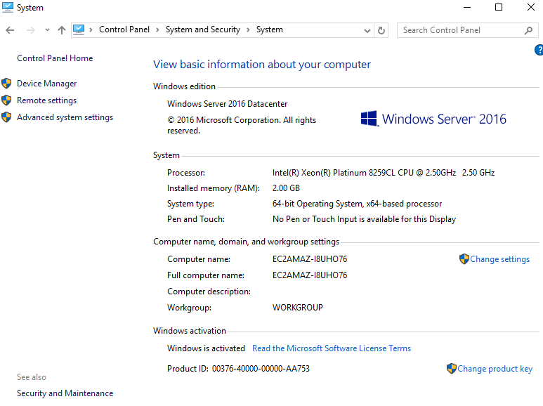
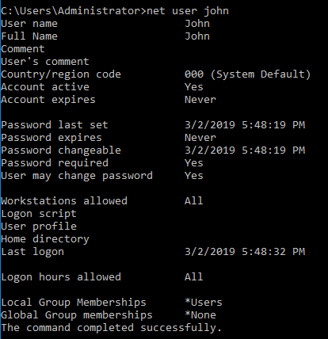
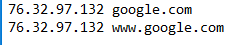
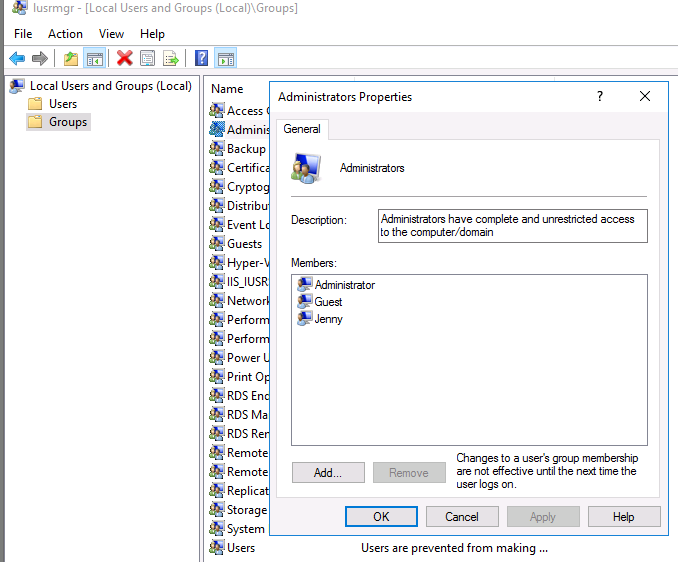
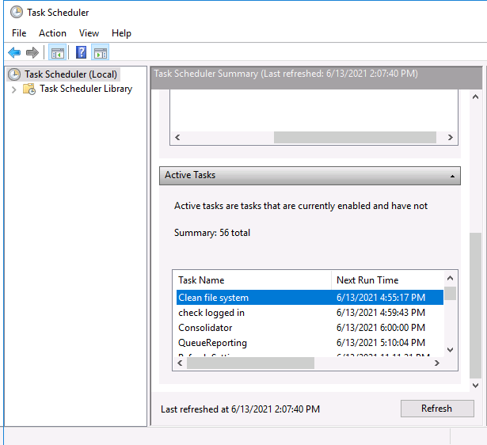
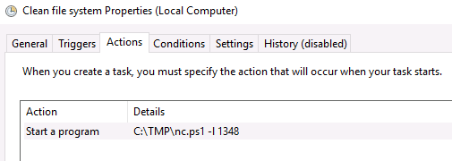
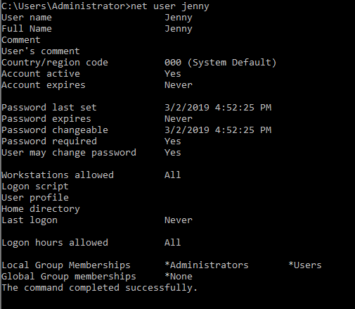
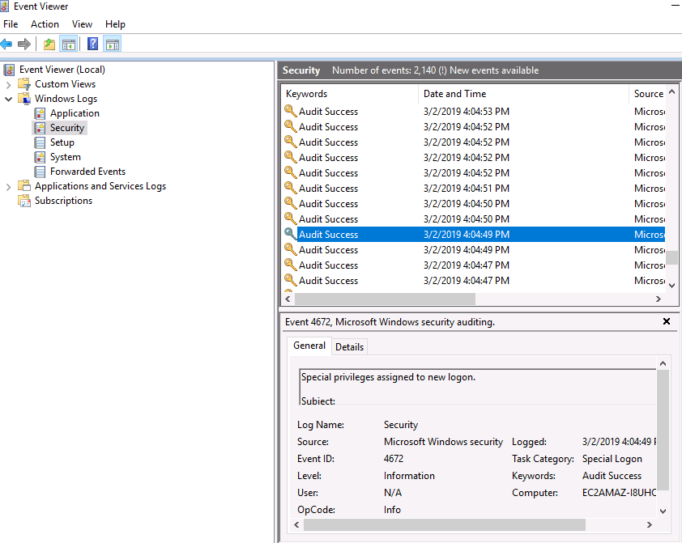
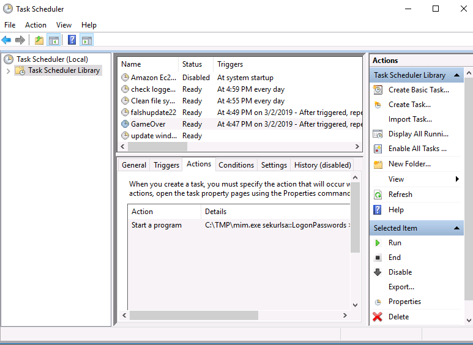
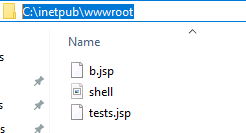

فحص الويندوز
المهمة 1 - فحص الويندوز
Press "Start Machine"
Connect to the machine using RDP. The credentials the machine are as follows:
Username: Administrator
Password: letmein123!
ما هو إصدار وسنة آلة الويندوز؟
1. Click the Start button on your Windows taskbar.
2. Choose Settings➪Control Panel.> \System and Security\System
Windows Server 2016
أي مستخدم قام بتسجيل الدخول في الماضي؟
Administrator
متى آخر مرة سجل جون الدخول إلى النظام؟
Answer format: MM/DD/YYYY H:MM:SS AM/PM
cmd > net user john
03/02/2019 5:48:32 PM
What IP does the system connect to when it first starts?
10.34.2.3
What two accounts had administrative privileges (other than the Administrator user)?
Answer format: username1, username2
usrmgr > Groups > Administrator
Jenny, Guest
Whats the name of the scheduled task that is malicous.
Clean file system
ما هو الملف الذي كانت المهمة تحاول تشغيله يوميًا؟
nc.ps1
ما هو المنفذ الذي استمع إليه هذا الملف محليًا
1348
متى آخر مرة سجلت جيني؟
cmd > net user jenny
Never
At what date did the compromise take place?
Answer format: MM/DD/YYYY
03/02/2019
At what time did Windows first assign special privileges to a new logon?
Answer format: MM/DD/YYYY HH:MM:SS AM/PM
event viewer > security
03/02/2019 4:04:49 PM
ما الأداة التي تم استخدامها للحصول على كلمات مرور Windows؟
Task Scheduler > GameOver > Actions
Mimikatz
ماذا كان للمهاجمين التحكم الخارجي وخوادم الأوامر IP؟
localhost(c:) > Windows > System32 > drivers > etc >
76.32.97.132
ما هو اسم امتداد الصدفة الذي تم تحميله عبر موقع الخوادم؟
C:\inetpub\wwwroot
.jsp
ما هو آخر منفذ فتحه المهاجم؟
Windos Firewall > Inbound Rules
1337
تحقق من وجود تسمم بنظام أسماء النطاقات ، ما هو الموقع الذي تم استهدافه؟
google.com